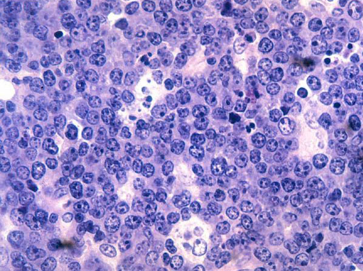

定義與定位
| 項目 | 重點 |
|---|---|
| 本質 | 生發中心來源、極度侵襲的成熟 B 細胞淋巴瘤 |
| 好發族群 | 兒童與年輕成人為主；免疫缺陷者風險升高 |
| 分類位置 | 成熟 B · 高度侵襲；見 Hema Category |
| 三型情境 | 地方性（非洲兒童、顎骨、高 EBV）· 散發性（迴盲部／腹部腫塊）· 免疫缺陷相關（HIV 等） |
🆕 WHO HAEM5 更強調 EBV+ vs EBV− 的生物學分組，而非只用舊的地理標籤。
病因與機制
flowchart TD A["MYC 易位<br/>t(8;14) 最常見"] --> B["IG 增強子<br/>持續驅動 MYC"] B --> C["細胞週期不停啟動<br/>倍增時間極短"] C --> D["Ki-67 近 100%<br/>starry sky 形態"] C --> E["腫瘤負荷迅速堆積"] E --> F["細胞大量崩解"] F --> G["腫瘤溶解症候群"] classDef key fill:#263238,stroke:#000,color:#fff,font-weight:bold class G key

單調、緊密排列的中等大小腫瘤細胞形成深色「夜空」；散在吞噬凋亡碎屑、胞質較淡的 tingible-body macrophage 形成「星星」。Source: Wikimedia Commons — Burkitt's lymphoma Histopathology, National Cancer Institute（public domain）。臨床表現
- 典型：數週內冒出的巨大腫塊——顎骨／面骨（地方性）或迴盲部、腹腔、卵巢（散發性）
- 提示性：LDH 與尿酸顯著升高；B symptoms
- 少見但重要：腦膜與中樞侵犯；骨髓大量侵犯時與 B-ALL 難分
→ 相關主訴流程：Lymphadenopathy↗、Fever
診斷
| 診斷條件 | 內容 |
|---|---|
| 形態 | 中等大小、單調 B 細胞；starry-sky（tingible-body macrophage） |
| 免疫表型 | CD20+ CD10+ BCL6+（生發中心表型）、BCL2 陰性 |
| 增殖指數 | Ki-67 ≈ 100% |
| 分子 | MYC 易位：t(8;14) 最常見，亦可 t(2;8)、t(8;22) |
| 必查 | LDH、尿酸、鉀、磷、鈣、腎功能；分期 PET-CT ＋ 腦脊髓液細胞學 |
要開的檢查：Lymph node biopsy↗、Flow cytometry↗、Cytogenetics FISH↗、Bone marrow biopsy↗
鑑別診斷
| 要排除的 | 支持它的線索 | 怎麼排除 |
|---|---|---|
| DLBCL／double-hit | 「很像 Burkitt」但 BCL2 陽性或 Ki-67 未達滿 | MYC ＋ BCL2/BCL6 FISH → 歸 HGBCL，不要硬套 Burkitt |
| B-ALL | 以骨髓與周邊血為主、TdT+、不成熟表型 | 表面 Ig 與 TdT |
| Follicular Lymphoma | 同屬生發中心，但 BCL2+、Ki-67 低 | BCL2 與 Ki-67 |
治療
| 情境 | 處置 |
|---|---|
| 治療前（最優先） | 積極水化 ＋ 降尿酸（rasburicase／allopurinol），密集追蹤電解質 |
| 第一線 | 短程、高強度多藥化療 ＋ Rituximab↗ |
| 中樞預防 | 常規鞘內化療 ± 可穿透中樞的藥物 |
| 難治／復發 | 預後差；考慮臨床試驗、細胞治療，適合者移植 |
併發症與預後
- 要盯的併發症：Tumor lysis syndrome↗（可在治療前自發發生）、Febrile neutropenia↗、中樞神經侵犯
- 預後：兒童與低期別成人治癒率高；取決於期別、中樞侵犯，以及能否安全撐過初期
禁忌與陷阱
相關連結
- DLBCL — 高度侵襲 B 對照，double-hit 的歸屬
- Follicular Lymphoma — 同為生發中心來源，靠 BCL2／Ki-67 分開
- Tumor lysis syndrome↗ — 本病最緊急的併發症
- t(8;14) 基因表
- 血液淋巴腫瘤分類 · Master Map